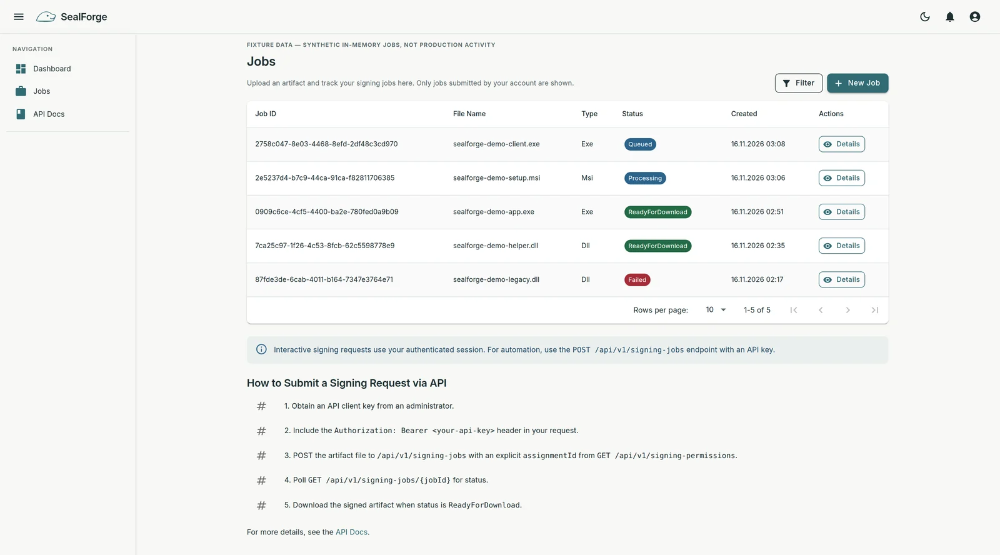
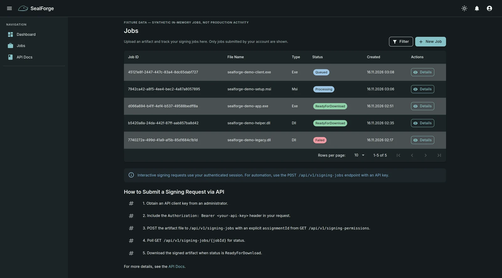
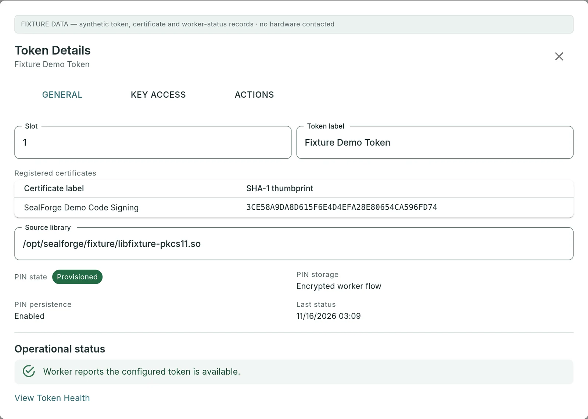
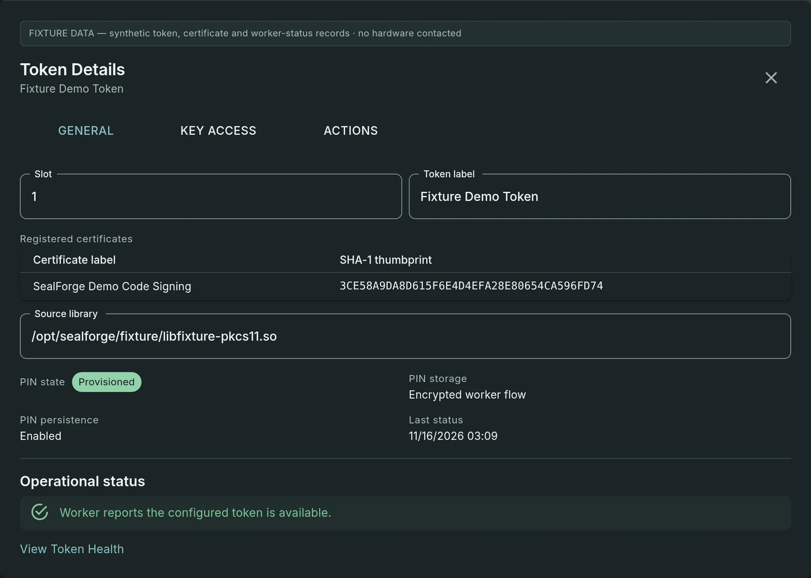

At the workbench
Make signing fit
the way you work.
Use the workspace by hand, connect a build pipeline, or look a little closer before you get started.
Your own signing desk
Start with what is yours.
You run SealForge on your infrastructure, with your signing token and certificate. Your administrator sets up the workspace and decides who may use each certificate.
- Prepare a host and your signing token.
- Follow the installation guide supplied with your release.
- Complete initial setup, then grant the signing access your team needs.
A note before you begin
SealForge is currently in private preview. The installer and product source require project access; there is no anonymous product download yet.
Already have access? The product repository contains the installation instructions, API contract and operating guide. Sign in with your invited account.
Product repository · access requiredFor developers
The same flow.
Without the manual steps.
Let your build pipeline hand a release to SealForge. Use a dedicated API identity with only the access it needs, and keep the signing keys out of your build scripts.
Use the API contract shipped with your deployment for request fields and examples. It stays with the product, rather than going stale on this page.
Submit the artifact.
Send the file using a signing permission granted to your pipeline identity.
Follow the job.
Check progress until signing, timestamping and verification finish. Handle a failed job as a failed release step.
Collect the verified result.
Download only when the job is ready. Keep its identifier with your build's release record.
A closer look
A place for the details that matter.
See a job's progress and history, then check the certificate behind a signature. The interface below uses sample data.


Your releases, together.


Know which certificate you are using.
These are browser captures of the current application components with sample data, not live signing sessions. They show the interface, not a hardware or end-to-end workflow test.
Leave the workbench a little better.
Questions and good ideas are welcome.
Found something confusing? Have an idea for a clearer workflow? Public feedback and website contributions are welcome.
Clear about what is public.
This website and its issue tracker are public. The product repository is access-restricted during the preview; that is separate from the website source.
Writing about SealForge or making something for it? The brand kit includes artwork, documents and editable templates.